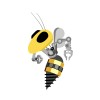

Georgia Tech · Aerospace Engineering + CS · Expected May 2028
Building deployable autonomy systems for robotics and space applications.
Perception, state estimation, control and planning, sim-to-real, and edge/distributed systems — engineered end-to-end for robots and spacecraft that have to work outside the lab.
- Anduril AI Grand Prix: 1 of 8 Georgia Tech representatives; placed 3rd among 3,000+ teams in virtual qualifiers
- Palantir: edge AI pipelines on Kubernetes/Flink with sidecar execution for real-time sensor processing
- SpaceX GNC + NASA MSFC robotics: constellation architecture trades and neural IK for a 7-DOF manipulator
- Published and presented in IEEE, AIAA, Computers & Fluids, and AGU venues
Engineering Portfolio
Main Projects
Current autonomy, edge systems, learning-based robotics, and space GNC work — ordered by relevance to my technical profile today.
01
Perception · Estimation · Control · Sim-to-Real · Anduril AI Grand Prix
Monocular Autonomous Racing – Anduril AI Grand Prix
Developing a monocular autonomy stack for high-speed autonomous flight as one of eight Georgia Tech representatives in the Anduril AI Grand Prix.
- Selected as 1 of 8 Georgia Tech representatives; placed 3rd among 3,000+ teams in virtual qualifiers and advanced to hardware qualifiers
- YOLO/CNN-based gate detection with gate-corner detection and camera-geometry-based pose estimation
- GTSAM state estimation feeding high-speed trajectory planning with MPC / MPPI control
- Evaluating perception and control across simulation and hardware to identify and reduce sim-to-real failure modes
Autonomy Pipeline
Monocular Camera
RGB stream
→
Gate Detection
YOLO / CNN
→
Corner / Pose
Camera geometry
→
GTSAM Estimation
State estimation
→
Trajectory Planning
High-speed path
→
MPC / MPPI
Vehicle control
PythonPyTorchYOLOGTSAMMPCMPPIComputer VisionSim-to-Real
Monocular Autonomy Stack
Gate detection → pose estimation → GTSAM → MPC/MPPI
Edge Pipeline Architecture
Streaming pipelines with sidecar-executed user functions on constrained edge hardware
02
Edge Computing · Distributed Systems · Palantir Technologies
Edge AI Pipelines — Sidecar Execution for Real-Time Processing
Enabled stateful and stateless user functions in real-time edge pipelines so processing can run alongside streaming data on compute- and memory-limited hardware — reducing cloud dependency.
- Enabled stateful and stateless user functions via sidecar containers and JVM classloading
- Designed sidecar execution around security isolation and performance constraints on limited hardware
- Built across Kubernetes, Flink, Docker, and Cassandra for distributed execution and real-time sensor processing
- Reduced cloud dependency by running user-defined processing alongside streaming pipelines at the edge
Conceptual Edge Pipeline
Sensor Data
Real-time stream
→
Streaming Pipeline
Flink
→
User Function
Stateful / Stateless
→
Sidecar Container
Isolation + JVM
→
Edge Execution
On-device
KubernetesFlinkDockerCassandraJVMDistributed SystemsEdge Computing
03
Learning for Robotics · NASA MSFC / IEEE ICMRE 2026
Neural Inverse Kinematics for a 7-DOF Manipulator
Trained PyTorch forward and inverse kinematics networks for a 7-DOF Kinova arm — accepted for a NASA New Technology Report and IEEE ICMRE 2026 oral presentation.
- Trained PyTorch forward/inverse kinematics networks on 100k+ simulated poses for a 7-DOF Kinova arm
- Generated training data in Gazebo/Simulink and iteratively validated kinematic prediction error
- Accepted for a NASA New Technology Report for a novel inverse kinematics method under patent consideration
- Built a ROS2 robot-control stack integrating perception, language interaction, retrieval, and speech-based commands
System Pipeline
Pose Target
End-effector xyz + orientation
→
IK Neural Network
Learned Model
→
Candidate Joint Angles
7-DOF configuration
→
FK Validation
Error check
→
Valid Solution
Deployed
PyTorchROS2GazeboSimulinkPythonYOLO
Neural IK Architecture
Pose target → IK network → FK validation → actuation
Sim-to-Real Control Comparison
TD-MPC2 vs PPO vs PID evaluated in MuJoCo and on TurtleBot2
04
World-Model RL · Sim-to-Real · Georgia Tech DREAM Lab
TD-MPC2 vs PPO vs PID for Goal-Directed Navigation
Evaluated TD-MPC2, PPO, and PID in MuJoCo and on TurtleBot2, achieving 100% sim-to-real transfer under curriculum learning and domain randomization.
- Evaluated TD-MPC2, PPO, and PID in MuJoCo and on TurtleBot2 with 100% sim-to-real transfer
- Fixed degenerate PPO spinning through reward redesign; observed emergent planning with TD-MPC2
- Applied curriculum learning and domain randomization to maintain robustness under a 1 kg payload
Learning + Planning Pipeline
Environment Rollouts
MuJoCo / TurtleBot2
→
World Model Learning
Latent dynamics
→
TD-MPC2 Planning
Model-predictive control
→
Hardware Eval
Sim-to-real transfer
PythonPyTorchMuJoCoTD-MPC2PPOPID
05
GNC & Simulation · SpaceX
Constellation Architecture & Orbital Simulation
Designed Starshield constellation architectures across deployment, coverage, and cost trade spaces, with C++/Python simulations and visualizations supporting senior-leadership trade discussions.
- Designed Starshield constellation architectures across deployment, coverage, and cost trade spaces
- Built C++/Python constellation simulations, performance metrics, and visualizations for architecture trades
- Led trade discussions and presented analyses to senior leadership, supporting negotiations for a $4.16B government contract
Simulation Pipeline
Architecture Inputs
Deploy · coverage · cost
→
Constellation Sim
C++ · Python
→
Performance Metrics
Trade analysis
→
Visualization
Leadership review
C++PythonConstellation DesignGNCVisualization
Constellation Trade Space
Deployment, coverage, and cost architecture analysis
Traversability Cost Map
LIDAR terrain geometry → navigation cost maps
06
Perception & Planning · RoboJackets RoboNav
Autonomous Rover Traversability Mapping
Built a ROS2/C++ LIDAR pipeline converting point-cloud terrain geometry into navigation cost maps for autonomous rover navigation.
- Built a ROS2/C++ LIDAR pipeline converting point-cloud terrain geometry into navigation cost maps
- Computed slope, roughness, and elevation features and fused terrain costs into autonomous navigation
Perception → Planning Pipeline
LIDAR
3D point cloud
→
Terrain Features
slope · roughness · elevation
→
Cost Map
Traversability score
→
Navigation
Autonomous path
ROS2C++LIDARLinux
07
Perception & Control · Dynamics and Controls Systems Laboratory
F1TENTH Autonomous Perception & Avoidance Stack
Built a ROS2/Python F1TENTH stack using YOLO detection and disparity-based depth estimation, fusing LIDAR and stereo vision for real-time obstacle detection, avoidance, and vehicle control.
- Built a ROS2/Python F1TENTH stack using YOLO detection and disparity-based depth estimation
- Fused LIDAR and stereo vision for real-time obstacle detection, avoidance, and vehicle control
Autonomy Pipeline
Stereo + LIDAR
RGB + depth + scans
→
YOLO Detection
Learned Model
→
Sensor Fusion
Obstacle state
→
Vehicle Control
Avoidance
ROS2YOLOOpenCVPythonLIDARStereo Depth
F1TENTH Platform
YOLO + disparity depth + LIDAR fusion
More Projects
Earlier class and personal projects — kept here for completeness, secondary to current autonomy and systems work.
Computer Vision
Real-Time Driver Attention Monitoring
Monocular OpenCV pipeline for face/eye detection, gaze heuristics, and attention classification with a lightweight real-time alert path.
PythonOpenCV
Scientific Visualization
GRACE Remote Sensing Dashboard
Interactive dashboard for exploring GRACE satellite NetCDF data across spatial and temporal dimensions.
PythonNetCDFVisualization
Research Themes
Technical Focus
Interconnected areas spanning perception → estimation → control, plus edge systems and space GNC.
Perception & State Estimation
Monocular and multi-sensor pipelines — from YOLO/CNN detection and camera-geometry pose to GTSAM estimation and sensor fusion.
AI Grand Prix
F1TENTH
GTSAM
Control, Planning & Sim-to-Real
MPC/MPPI, classical control, and world-model RL — validated across simulation and hardware with curriculum learning and domain randomization.
MPC / MPPI
TD-MPC2
TurtleBot2
Edge & Distributed Systems
Real-time streaming pipelines with sidecar-executed user functions on constrained edge hardware — security isolation, performance, and reduced cloud dependency.
Palantir Edge AI
Kubernetes / Flink
Sidecar Execution
Space Systems & GNC
Constellation architecture trades, orbital simulation, and spacecraft GNC analysis for deployment, coverage, and cost decisions.
SpaceX Starshield
Constellation Sims
Orekit
Industry & Competition
Experience
Anduril AI Grand Prix Team · Georgia Tech Representative
- Selected as 1 of 8 Georgia Tech representatives; placed 3rd among 3,000+ teams in virtual qualifiers and advanced to hardware qualifiers.
- Developing monocular autonomy with YOLO/CNN gate detection, GTSAM state estimation, and MPC/MPPI control.
- Building gate-pose estimation from detected corners and camera geometry to support high-speed trajectory planning.
- Evaluating perception and control across simulation and hardware to identify and reduce sim-to-real failure modes.
Computer VisionGTSAMState EstimationMPCMPPISim-to-RealRobotics
Palantir Technologies · Software Engineering Intern – Edge AI Pipelines
- Enabled stateful and stateless user functions in real-time edge pipelines via sidecar containers and JVM classloading.
- Designed sidecar execution around security isolation and performance constraints on compute- and memory-limited hardware.
- Built across Kubernetes, Flink, Docker, and Cassandra to support distributed execution and real-time sensor processing.
- Reduced cloud dependency by enabling user-defined processing to execute alongside streaming pipelines at the edge.
KubernetesFlinkDockerCassandraJVMDistributed SystemsEdge Computing
SpaceX · GNC Software Engineering Intern
- Designed Starshield constellation architectures across deployment, coverage, and cost trade spaces.
- Built C++/Python constellation simulations, performance metrics, and visualizations for architecture trades.
- Led trade discussions and presented analyses to senior leadership, supporting negotiations for a $4.16B government contract.
Amentum / NASA Marshall Space Flight Center EV-43 · Machine Learning and Robotics Intern
- Trained PyTorch forward/inverse kinematics networks for a 7-DOF Kinova arm on 100k+ simulated poses.
- Generated training data in Gazebo/Simulink and iteratively validated kinematic prediction error.
- Accepted for a NASA New Technology Report for a novel inverse kinematics method under patent consideration.
- Built a ROS2 robot-control stack integrating perception, language interaction, retrieval, and speech-based commands.

RoboJackets – RoboNav · Software and Mechanical Team Member
- Built a ROS2/C++ LIDAR pipeline converting point-cloud terrain geometry into navigation cost maps.
- Computed slope, roughness, and elevation features and fused terrain costs into autonomous navigation.
Research Program
Research
Lab-affiliated research across learning-based control, aerodynamic modeling, and autonomous perception — listed separately with accurate date ranges.
DREAM Lab · Undergraduate Research Assistant
- Evaluated TD-MPC2, PPO, and PID in MuJoCo and on TurtleBot2, achieving 100% sim-to-real transfer.
- Fixed degenerate PPO spinning through reward redesign and observed emergent planning with TD-MPC2.
- Applied curriculum learning and domain randomization to maintain robustness under a 1 kg payload.
CEREAL Lab · Undergraduate Research Assistant
- Built Bayesian PyTorch models predicting airfoil pressure distributions and uncertainty from flight conditions.
- Built an LLM + RAG pipeline for natural-language retrieval and extraction across aerodynamic datasets.

Dynamics and Controls Systems Laboratory · Undergraduate Research Assistant
- Built a ROS2/Python F1TENTH stack using YOLO detection and disparity-based depth estimation.
- Fused LIDAR and stereo vision for real-time obstacle detection, avoidance, and vehicle control.
Research Output
Publications & Presentations
Published and accepted work spanning robotics, distributed intelligence, aerodynamics, and atmospheric sensing.
-
IEEE ICMRE 2026 · OralA. Save, “Artificial Neural Networks for 7-DOF Robot Forward and Inverse Kinematics.”Also accepted for a NASA New Technology Report (patent consideration).
-
AIAA ASCEND 2026W. Lowman, A. Save, D. Ho et al., “Distributed Intelligence Architecture for Edge Robotics.”
-
Computers & Fluids, vol. 298, 106662, 2025H. Lee, A. Save, P. Seshadri et al., “Large Airfoil Models.” DOI →
-
AGU Fall Meeting 2023“Exploring Atmospheric Effects During Solar Eclipses.”
Technical Stack
Skills
Core stack from current work across robotics, ML, edge systems, and aerospace GNC.
Core Programming
PythonC++Java
MATLABJavaScriptC#
Robotics / ML
ROS2PyTorchOpenCV
YOLOGTSAMGazebo
MuJoCoSimulinkOrekit
Control & Autonomy Concepts
MPCMPPIPID
State EstimationSensor Fusion
Path PlanningSim-to-Real
Reinforcement Learning
Systems
LinuxGitSQL
KubernetesFlinkCassandra
DockerDistributed Systems